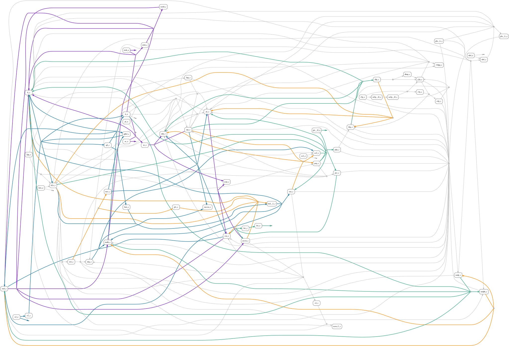

Multi-condition FBA#
Multi-condition flux balance analysis represents several metabolic contexts in one optimization problem. Every condition has its own flux vector, reaction bounds, and objectives, so media, perturbations, or required phenotypes can differ while the underlying metabolic model remains the same.
In CORNETO, MultiSampleFBA.build_many constructs this condition-by-reaction flux matrix directly. This supports two related uses:
solve and inspect several condition-specific FBA problems through one consistent interface;
couple reaction selection across conditions to identify a compact shared program and the reactions needed by particular contexts.
The second use is the main advantage of the multi-condition formulation: all conditions influence reaction selection before the networks are compared.
Independent and coupled formulations#
Without regularization, the condition-specific flux vectors obey separate steady-state constraints and can be interpreted as several FBA problems built together. With lambda_reg > 0, CORNETO adds structured sparsity across the complete flux matrix.
For each reaction, CORNETO records whether it is active in each condition and whether it is active in the union. A reaction used by one or several conditions contributes once to the union-level penalty. Reusing a reaction is therefore cheaper than introducing another alternative, while condition-specific reactions remain available when required by their bounds or phenotypes.
Structured sparsity penalizes the union; it does not force identical fluxes and does not directly maximize the intersection. Shared and context-specific reactions are summaries derived from the jointly selected condition networks.
Why is this different from pairwise comparisons?#
A metabolic model usually admits many equivalent or near-equivalent flux distributions. Consider an experiment with a control and two perturbed conditions, A and B. One common strategy is to run two independent optimizations:
Optimization |
Condition-specific flux solutions |
Reactions coupled by one union penalty |
|---|---|---|
Separate analysis 1 |
control and condition A |
reactions used by control or A |
Separate analysis 2 |
a new control solution and condition B |
reactions used by control or B |
The media are not combined: every condition keeps its own bounds and flux vector. However, the control is solved twice, once inside each independent optimization. Its selected control reaction set—the reactions carrying flux in that solution—can differ between the two runs even though its bounds and required phenotype are unchanged.
Comparing the two results afterward can therefore mix genuine biological differences with independent selection among alternative pathways. In a joint CORNETO analysis, one optimization contains one flux vector for control, one for A, and one for B, and applies a single union penalty across all three. The resulting shared and condition-dependent reaction sets are internally consistent with the complete experiment.
Relation to COBRApy#
COBRApy naturally solves FBA or pFBA independently for each medium. A user can reproduce joint selection by manually constructing a coupled mixed-integer formulation with optlang. CORNETO provides the condition-specific flux matrix and union-level structured sparsity directly through MultiSampleFBA.build_many.
Define the metabolic conditions#
The conditions change either the carbon source or oxygen availability. As in the previous guide, uptake is a negative exchange flux and 0 blocks uptake.
Condition |
Glucose uptake |
Acetate uptake |
Oxygen uptake |
|---|---|---|---|
Glucose aerobic |
−10 |
0 |
−20 |
Acetate aerobic |
0 |
−10 |
−20 |
Glucose anaerobic |
−10 |
0 |
0 |
condition_names = ["glucose aerobic", "acetate aerobic", "glucose anaerobic"]
media_bounds = {
"glucose aerobic": {
"EX_glc__D_e": (-10.0, 1000.0),
"EX_ac_e": (0.0, 1000.0),
"EX_o2_e": (-20.0, 1000.0),
},
"acetate aerobic": {
"EX_glc__D_e": (0.0, 1000.0),
"EX_ac_e": (-10.0, 1000.0),
"EX_o2_e": (-20.0, 1000.0),
},
"glucose anaerobic": {
"EX_glc__D_e": (-10.0, 1000.0),
"EX_ac_e": (0.0, 1000.0),
"EX_o2_e": (0.0, 1000.0),
},
}
biomass_objectives = {name: {biomass_id: -1} for name in condition_names}
Establish each condition’s growth capacity#
First, standard multi-condition FBA determines the maximum biomass supported by each medium. At this stage the flux vectors share one problem object but are not coupled by sparsity.
standard_problem = MultiSampleFBA().build_many(
G,
objectives=biomass_objectives,
reaction_bounds=media_bounds,
)
standard_problem.solve(solver="scipy")
maximum_biomass = pd.Series(
standard_problem.expr.flow.value[biomass_index, :],
index=condition_names,
name="maximum biomass",
)
assert (maximum_biomass > 0).all()
maximum_biomass.to_frame()
| maximum biomass | |
|---|---|
| glucose aerobic | 0.832614 |
| acetate aerobic | 0.173339 |
| glucose anaerobic | 0.211663 |
Require growth and favor a compact reaction union#
For this controlled comparison, biomass is fixed at exactly 90% of each condition’s optimum. Pairwise and joint analyses therefore explain the same predefined phenotypes: network differences cannot be attributed to different achieved growth rates.
lambda_reg=0.1 penalizes reactions in the union of the selected condition networks. Because biomass is fixed, any positive regularization weight ranks feasible solutions by their union size instead of trading additional growth for sparsity.
The two helpers below keep the scientific inputs visible: one builds a sparse problem for named conditions and the other labels its flux matrix.
biomass_fraction = 0.90
biomass_targets = biomass_fraction * maximum_biomass
activity_tolerance = 1e-6
def build_sparse_problem(names):
"""Build and solve sparse FBA for the requested conditions."""
objectives = {name: biomass_objectives[name] for name in names}
bounds = {
name: {
**media_bounds[name],
biomass_id: (biomass_targets[name], biomass_targets[name]),
}
for name in names
}
problem = MultiSampleFBA(lambda_reg=0.1).build_many(
G,
objectives=objectives,
reaction_bounds=bounds,
)
problem.solve(solver="highs")
return problem
def labeled_fluxes(problem, names):
"""Return the solved flux matrix with reaction and condition labels."""
return pd.DataFrame(
problem.expr.flow.value,
index=reaction_ids,
columns=names,
)
What happens in separate two-condition analyses?#
First we build one optimization containing glucose-aerobic and acetate-aerobic flux vectors. Separately, we build another containing glucose-aerobic and glucose-anaerobic flux vectors. Each condition retains its own medium bounds; they are columns in the same optimization, not a combined medium.
Because these are independent optimizations, glucose aerobic is solved twice. We compare the active reactions selected for that identical glucose-aerobic condition in the two results.
control_acetate_names = ["glucose aerobic", "acetate aerobic"]
control_anaerobic_names = ["glucose aerobic", "glucose anaerobic"]
control_acetate_problem = build_sparse_problem(control_acetate_names)
control_anaerobic_problem = build_sparse_problem(control_anaerobic_names)
control_acetate_fluxes = labeled_fluxes(control_acetate_problem, control_acetate_names)
control_anaerobic_fluxes = labeled_fluxes(control_anaerobic_problem, control_anaerobic_names)
pairwise_control_summary = pd.DataFrame(
{
"analyzed with acetate aerobic": {
"biomass": control_acetate_fluxes.loc[biomass_id, "glucose aerobic"],
"active reactions": (
control_acetate_fluxes["glucose aerobic"].abs() > activity_tolerance
).sum(),
},
"analyzed with glucose anaerobic": {
"biomass": control_anaerobic_fluxes.loc[biomass_id, "glucose aerobic"],
"active reactions": (
control_anaerobic_fluxes["glucose aerobic"].abs() > activity_tolerance
).sum(),
},
}
)
assert np.isclose(pairwise_control_summary.loc["biomass"].iloc[0], pairwise_control_summary.loc["biomass"].iloc[1])
pairwise_control_summary
| analyzed with acetate aerobic | analyzed with glucose anaerobic | |
|---|---|---|
| biomass | 0.749352 | 0.749352 |
| active reactions | 50.000000 | 48.000000 |
control_activity = pd.DataFrame(
{
"analyzed with acetate aerobic": (
control_acetate_fluxes["glucose aerobic"].abs() > activity_tolerance
),
"analyzed with glucose anaerobic": (
control_anaerobic_fluxes["glucose aerobic"].abs() > activity_tolerance
),
}
)
different_control_reactions = control_activity[
control_activity.iloc[:, 0] != control_activity.iloc[:, 1]
].copy()
different_control_reactions.insert(0, "reaction", different_control_reactions.index)
assert not different_control_reactions.empty
different_control_reactions.reset_index(drop=True)
| reaction | analyzed with acetate aerobic | analyzed with glucose anaerobic | |
|---|---|---|---|
| 0 | FUM | True | False |
| 1 | G6PDH2r | False | True |
| 2 | GND | False | True |
| 3 | ICL | True | False |
| 4 | MALS | True | False |
| 5 | MDH | True | False |
| 6 | NADTRHD | False | True |
| 7 | PGL | False | True |
| 8 | PPC | False | True |
| 9 | PPCK | True | False |
| 10 | SUCDi | True | False |
| 11 | THD2 | True | False |
Both columns in the table describe the active reaction set for glucose aerobic, not the other condition in each analysis. Its medium and fixed biomass are identical in both runs, yet the selected reactions differ. The difference arises because each two-condition optimization can choose a different feasible pathway for glucose aerobic while minimizing its own reaction union. It is not a change in control biology. A post-hoc comparison cannot distinguish this optimization variability from genuine context specificity.
Solve all conditions jointly#
We now place all three condition-specific flux vectors in one optimization. Glucose aerobic appears only once, alongside acetate aerobic and glucose anaerobic, and a single reaction-union penalty couples the three solutions.
joint_problem = build_sparse_problem(condition_names)
joint_fluxes = labeled_fluxes(joint_problem, condition_names)
joint_activity = joint_fluxes.abs() > activity_tolerance
condition_summary = pd.DataFrame(
{
"biomass target": biomass_targets,
"solved biomass": joint_fluxes.loc[biomass_id],
"active reactions": joint_activity.sum(axis=0),
}
)
assert (condition_summary["solved biomass"] >= condition_summary["biomass target"] - 1e-7).all()
condition_summary
| biomass target | solved biomass | active reactions | |
|---|---|---|---|
| glucose aerobic | 0.749352 | 0.749352 | 48 |
| acetate aerobic | 0.156005 | 0.156005 | 53 |
| glucose anaerobic | 0.190497 | 0.190497 | 47 |
Biological interpretation#
The selected groups recover recognizable metabolic adaptations rather than isolated reactions:
Usage pattern |
Representative selected reactions |
Interpretation |
|---|---|---|
Glucose anaerobic only |
|
A complete ethanol-fermentation route, from acetyl-CoA reduction to ethanol secretion, that supports redox balancing without respiration. |
Acetate aerobic only |
|
The glyoxylate shunt and gluconeogenesis conserve acetate carbon and produce biomass precursors; transhydrogenase contributes cofactor balancing. |
Both aerobic conditions |
|
Oxygen uptake together with respiratory-chain and TCA-cycle activity shared by aerobic growth. |
These are interpretations of one sparse model solution, not evidence that the reactions are biologically exclusive to those conditions.
Activity does not imply the same flux direction. The categories above use
abs(flux) > activity_tolerance. A reaction shared by two conditions may run in opposite directions or serve different roles. For example, the acetate transport and exchange reactions shared by acetate-aerobic and glucose-anaerobic solutions support acetate uptake in one context and acetate production or secretion in the other. Here, shared means that the same reaction is active—not that its direction, flux magnitude, or physiological role is identical.
Visualize the joint metabolic program#
The plot shows the complete reaction union. Shared-core reactions are gray and de-emphasized; colored reactions show how the core is adapted to carbon source and oxygen availability.
Active conditions |
Color |
|---|---|
All conditions |
Gray |
Both aerobic conditions |
Blue |
Both glucose conditions |
Green |
Acetate aerobic and glucose anaerobic |
Purple |
Acetate aerobic only |
Orange |
Glucose anaerobic only |
Red |
reaction_groups = reaction_usage.set_index("reaction")["active in"].replace(
{", ".join(condition_names): "shared core"}
)
group_colors = {
"shared core": "#b0b0b0",
"glucose aerobic, acetate aerobic": "#277da1",
"glucose aerobic, glucose anaerobic": "#43aa8b",
"acetate aerobic, glucose anaerobic": "#7b2cbf",
"acetate aerobic": "#f8961e",
"glucose anaerobic": "#e63946",
}
selected_reactions = np.flatnonzero(joint_union.to_numpy())
joint_network = G.edge_subgraph(selected_reactions)
edge_style = {}
for displayed_index, original_index in enumerate(selected_reactions):
reaction_id = reaction_ids[original_index]
group = reaction_groups[reaction_id]
is_shared_core = group == "shared core"
edge_style[displayed_index] = {
"color": group_colors[group],
"penwidth": "1.5" if is_shared_core else "3",
}
joint_network.plot(
graph_attr={"rankdir": "LR"},
node_attr={
"fixedsize": "false",
"shape": "box",
"style": "rounded",
"margin": "0.05,0.03",
},
custom_edge_attr=edge_style,
)

Compare the selected unions#
The aggregate from the separate analyses includes every reaction selected in either two-condition optimization, including both alternative glucose-aerobic reaction sets. The joint analysis instead selects one reaction union while considering all three conditions simultaneously.
pairwise_activity = pd.concat(
[
control_acetate_fluxes.abs() > activity_tolerance,
control_anaerobic_fluxes.abs() > activity_tolerance,
],
axis=1,
)
pairwise_union = pairwise_activity.any(axis=1)
union_comparison = pd.Series(
{
"aggregate union from separate comparisons": int(pairwise_union.sum()),
"union from one joint analysis": int(joint_union.sum()),
},
name="active reactions",
)
assert joint_union.sum() < pairwise_union.sum()
union_comparison.to_frame()
| active reactions | |
|---|---|
| aggregate union from separate comparisons | 65 |
| union from one joint analysis | 61 |
Interpretation and limitations#
The joint result provides one internally consistent reference across all three conditions. Reactions in the shared core support every selected state; partially shared and context-specific reactions describe how that core is adapted to carbon source and oxygen availability. Because a reused reaction contributes once to the union penalty, alternative pathways are selected consistently instead of independently in each comparison.
These conditions are designed to illustrate joint reaction selection. The resulting shared and context-specific sets are properties of this model and formulation, not experimental evidence of pathway activity. Structured sparsity assumes that reusing reactions is preferable when several feasible explanations exist, and alternative joint optima may still exist.
Continue with gene expression integration to learn how expression evidence selects a feasible metabolic state for one condition. The following Multi-condition iMAT guide will extend that formulation across several contexts.